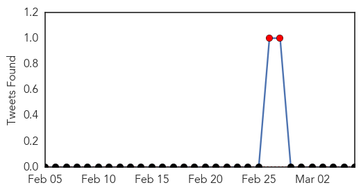
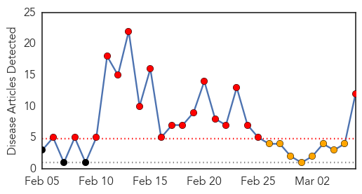
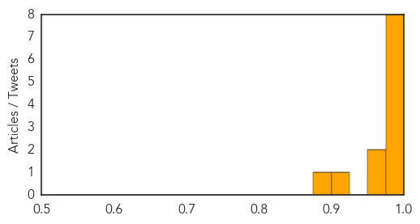

Swine Flu
30-Day Web Trend
13 alerts, 6 warnings

30-Day Twitter Trend
3 alerts, 0 warnings

Article Locations

Article Confidences

Top Articles:
- 1.000
- Swineflu: One more dead in Kashmir, toll reaches 8; 291 affected
- 0.999
- Swine flu: Burney trust warns Pakistanis against travelling to India
- 0.999
- 16 swine flu deaths in two Delhi hospitals; official toll is two
- 0.999
- UAE advises citizens against travelling to India
- 0.999
- Swine flu: UAE advises citizens against travelling to India
- 0.999
- Burney warns Pakistanis against travelling to India
- 0.998
- One more swine flu death takes toll to 9
- 0.997
- 2 more swine flu deaths in J&K
- 0.996
- 16 swine flu deaths in Delhi hospitals; official toll is two
- 0.996
- Swine flu worries
- 0.995
- Swine flu patient's sugar level worrying
- 0.994
- Swine flu claims more lives in India
- 0.990
- Ansar Burney warns Pakistanis traveling to India
- 0.982
- Ansar Burney warned Pakistani citizens against traveling to India
- 0.976
- Sonam Kapoor tests positive for swine flu
- 0.973
- First swine flu case in Manipur
- 0.960
- Daman on alert for tourists from swine flu-hit Surat
- 0.948
- H1N1 cases go up to 11 in district
- 0.923
- Man succumbs to swine flu
- 0.831
- The Assam Tribune Online
- 0.667
- Patient ordeal after cure
- 0.649
- Red tape delays swine flu testing lab
- 0.590
- Tour operators fear cancellations as UAE issues travel advisory
- 0.565
- Holi will be low-key affair this time in city
Top Tweets:
-
No tweets found for Mar 06, 2015
MERS
30-Day Web Trend
19 alerts, 3 warnings

30-Day Twitter Trend
12 alerts, 2 warnings

Article Locations

Article Confidences
Top Articles:
- 1.000
- Saudi Arabia reports 10 more MERS-linked deaths
- 1.000
- WHO Saudi MERS report notes exposures in health settings
- 0.999
- MERS kills 10 more in Saudi, health campaign broadened
- 0.999
- DH closely monitors 10 additional MERS cases in Saudi Arabia
- 0.998
- 3 Filipino female nurses have MERS virus
- 0.997
- 3 Filipino nurses working in Saudi Arabia infected with MERS-CoV
- 0.996
- Work linked to Filipino MERS cases in Saudi Arabia
- 0.989
- MERS-CoV downs 3 Pinoys in KSA
- 0.965
- Three Filipino health workers infected with MERS in Saudi Arabia
- 0.953
- 3 Filipino health workers infected with Mers in Saudi Arabia
- 0.920
- 3 Pinay nurses in Saudi Arabia have MERS-CoV
- 0.884
- DOH set to dispatch MERS-Cov mission to Saudi Arabia
Top Tweets:
- 0.711
- AFD Blog `Saudi MOH Reports 2 MERS Cases' MERS-CoV http://t.co/NAzLNYg035
- 0.667
- RT: AFD Blog `Saudi MOH Reports 2 MERS Cases' MERS-CoV http://t.co/NAzLNYg035
- 0.517
- AFD Blog `@WHO MERS Update – March 6th' MERS-CoV http://t.co/455wBqicEr